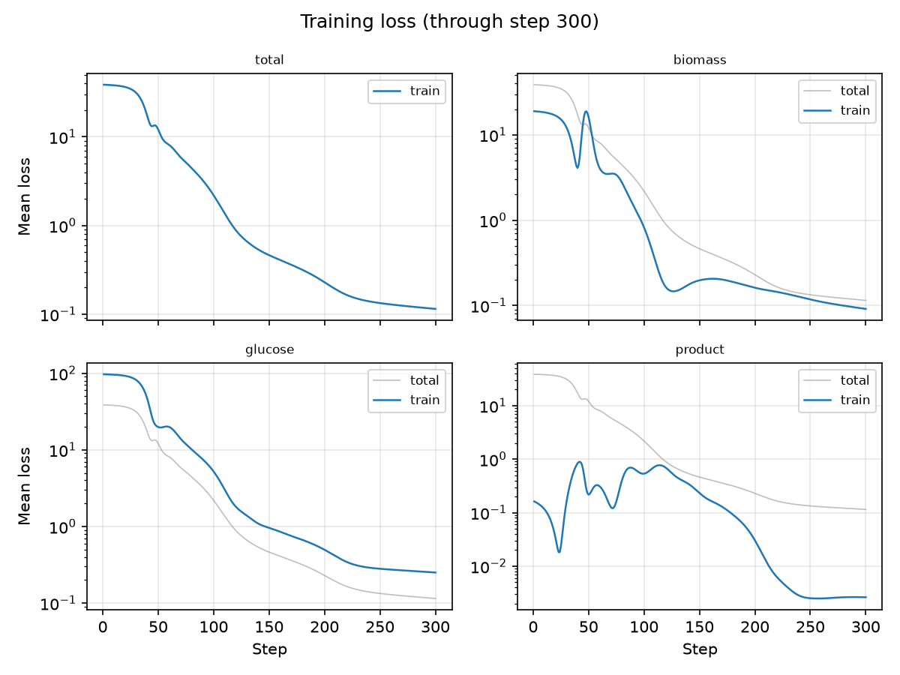
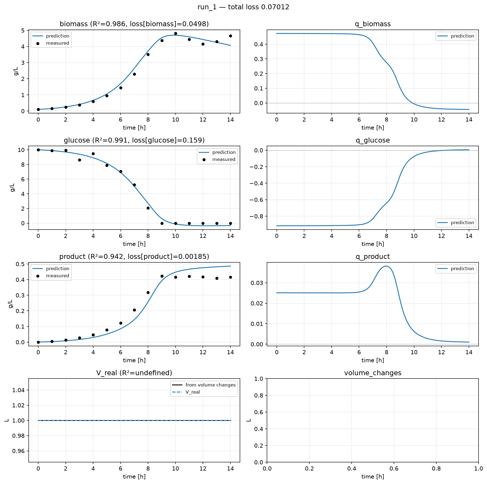

3. Train a Model¶
Fit a hybrid ODE to the dataset using every default, and learn to read what came out.
The quickstart ran these commands. This tutorial explains them.
What a hybrid model is here¶
The ODE hybrax.train solves has two halves:
d(state)/dt = biology(rates) ← your model predicts this
+ transport(feeds, dilution, samples, volume) ← hybrax.format wrote this
Training adjusts the first half so the integrated trajectory matches your measurements.
For demo_batch the second half is nearly empty (a batch run has no feeds) so
everything the model does is visible in three specific rates.
3.1 The prepare command¶
{ "prepare": { "raw_input": "data.json" } }
INFO hybrax.train.prepare: prepare hooks default: transform_process_collection, augment_state_values
INFO hybrax.format.serialization: Saved to ./prepared/prepared.json
prepare is a separate step for a reason: it is where the dataset stops being data
and becomes a training problem. It resolves which measurements are targets, fits the
control splines, fixes the state and control layout, and writes all of it to
prepared/prepared.json. Training reads only that.
Because it is separated, you can prepare once and train twenty models against an identical, reproducible starting point.
top-level keys: ['case_id', 'citation', 'metadata', 'organism', 'processes']
3.2 The train command¶
{
"data": { "prepared": "prepared" },
"train": { "epochs": 300, "seed": 0 },
"output": { "dir": "run" }
}
INFO __main__: training complete: first_mean_loss=38.6735 last_mean_loss=0.114875 delta=-38.5587
Everything not named in that config is a default, and each one is replaceable:
Default |
What it is |
Replace it with |
|---|---|---|
reaction module |
A 2-layer MLP over the modeled state |
|
loss module |
Per-target mean squared error |
|
scales |
All ones: i.e. no scaling |
|
optimizer |
Adam, lr 1e-3, gradient clipping at norm 1000 |
|
batching |
Full batch, shuffled |
|
3.3 Read the output¶
./source/_data/out/runs/tutorial_03/run
Everything below lives in that directory, self-contained: cp -r it anywhere and
keep working from the copy.
The per-epoch record:
columns: step, total_updates, epoch, batch_in_epoch, samples_seen, mean_loss, per_target_loss, per_process_loss, target_names, process_names, step_dt, rebuild_count, holdout_loss, holdout_label, epoch_mean_loss, epoch_time_seconds, grad_norm, n_failed_samples, failed_processes
{'step': 1, 'total_updates': 300, 'epoch': 1, 'batch_in_epoch': 1}
{'step': 151, 'total_updates': 300, 'epoch': 151, 'batch_in_epoch': 1}
{'step': 300, 'total_updates': 300, 'epoch': 300, 'batch_in_epoch': 1}
And the loss curve:

Then the fit itself: measurements against the integrated trajectory on the left, the inferred rates on the right:

What to look at, in order¶
Does the loss go down and stay down? A curve that drops then explodes usually means the solve is struggling, not that the model is wrong: try tightening
solver.rtol/atolor lowering the learning rate.Do the trajectories track the dots? R² per target is printed in each panel.
Are the rates physically plausible? This is the check people skip. A model can fit concentrations beautifully with rates that are nonsense: growth and death both far too high, or uptake compensating for a transport error. The right-hand column is where that shows up.
Gradient norms are worth a glance
grad_norm_curve.png shows the raw gradient norm, before clipping. If it sits
permanently at the clip threshold (grad_clip_norm, default 1000), your effective step
size is not what you think it is, and that is usually a scaling problem, which is
Tutorial 4.
3.4 Second runs¶
--overwrite is required to reuse an output directory. You will hit this immediately on
your second run; it is deliberate, so a long training run cannot be silently destroyed.
hybrax train --config train-config.json --overwrite
hybrax train --config train-config.json --epochs 50 # flags beat the config file
What you learned¶
prepareandtrainare separate so training starts from a reproducible artifact.The run directory is self-contained and records exactly what was run.
Every part of the model is a default you can replace, one hook at a time.
Judge a fit by its rates, not only by its trajectories.
What’s next¶
You can run the full tutorial at examples/tutorial_03_train/run.py.
Tutorial 4: replace the two most important defaults and measure the difference.
Config in full: Configuration.
What
preparedoes in detail: Prepare.